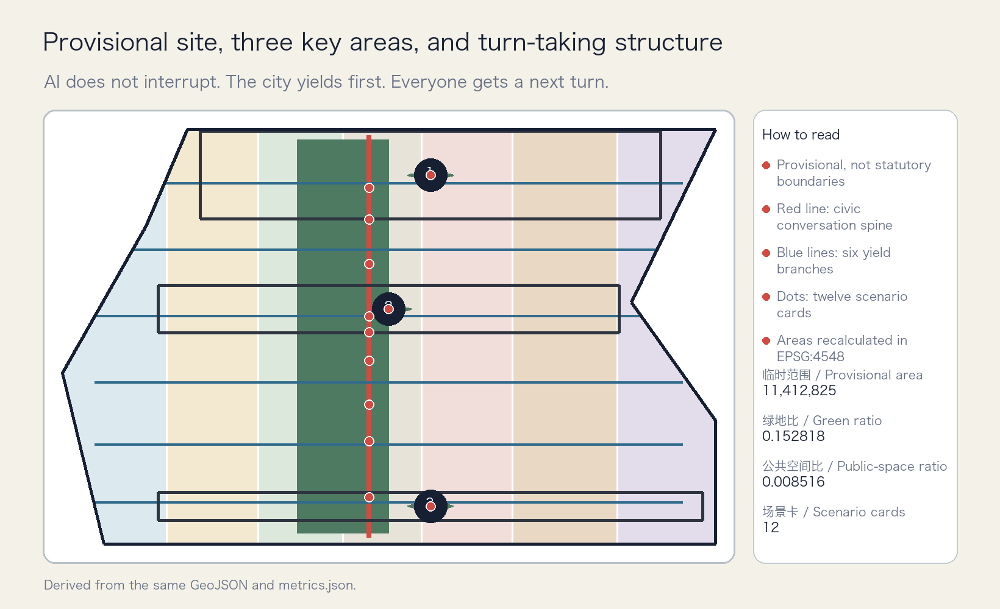
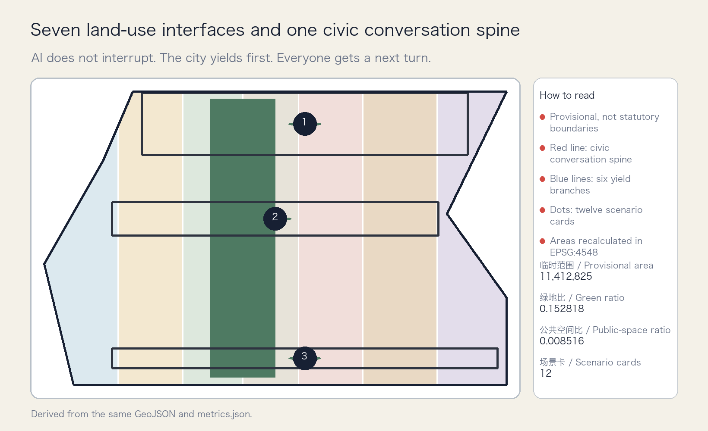
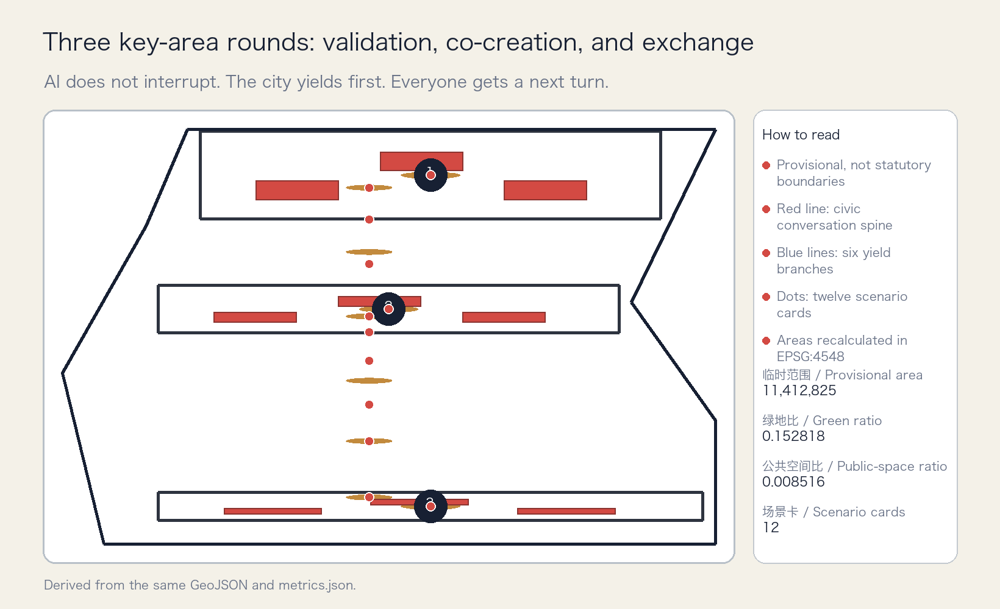
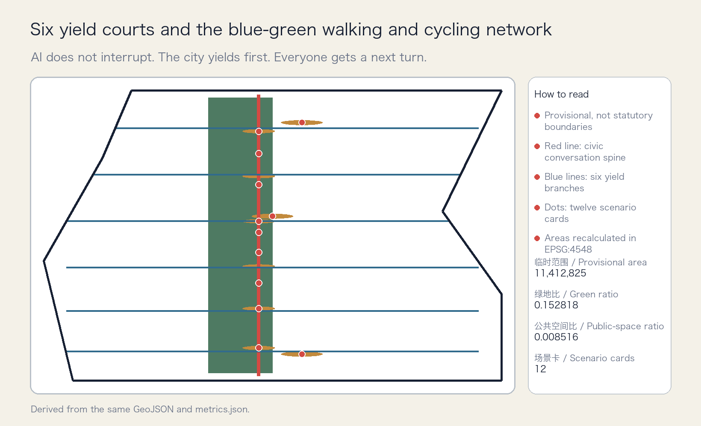
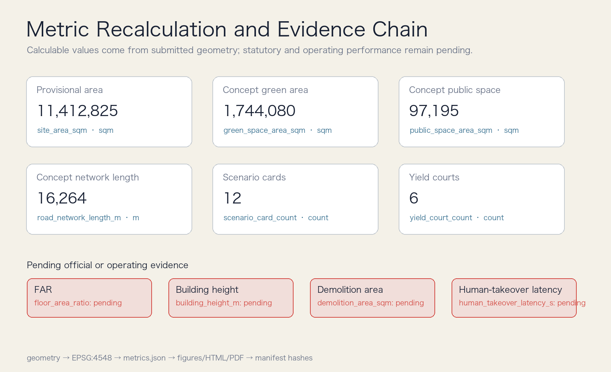

Overview map

One spine, three rounds, two wings, six yield points, and twelve turns. All displayed values derive from the same machine-readable package.





Human-Machine Yield Crossing, Shared Curb Turns, Multimodal Public Service Round Table, Walking and Cycling Break Co-survey, Community Health Navigation, Education and Learning Assistant, Legal and IP Document Assistant, Urban Maintenance Work-Order Dialogue, Event and Everyday Commuting, International AI Round Table, Jing-Zhang Oral-History Station, One-Second City Pause
The first three are industry-test scenarios; every high-impact scenario retains on-site stop authority, human takeover, opt-out, and review.
Civic conversation spine wayfinding; Six yield courts; Zhongzhiyuan test yard; AI Origin round table; Dazhongsi curb timetable; Multimodal public-service test; Three pilgrimage landmarks; Public scenario ledger; Annual Your Turn Assembly
Near, medium, and long-term phases require official boundaries, regulatory plans, ownership, transport, utilities, fire, and heritage data before implementation.
Issue → public rule → controlled test → on-site stop / human takeover → complaint and opt-out → review and next turn
Sources: sources.json records publisher, access date, use, transformation, and limitations; assumptions.json records boundary, regulatory, building, mobility, operation, and case limitations.
compliance_matrix.json maps announcement tasks and agent.1-agent.6 to narrative, geometry, metrics, drawings, and web views. Deterministic, spatial, visual, and professional checks must all pass.
See sources.json and assumptions.json. This page loads no remote scripts, map tiles, fonts, APIs, forms, or trackers.
Provisional geometry supports concept comparison and internal consistency only; it is not a statutory redline.
Nine work packages advance through near, medium, and long terms; high-impact AI retains on-site stop authority, human takeover, opt-out, and review.